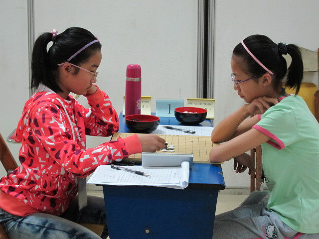

五一宁波行
#1 五一宁波行 作者：黄药师 发表时间：2012-5-2 22:35:25
 还好一直到宁波，肚子都没有出状况。
还好一直到宁波，肚子都没有出状况。
放下行李后，我们三个大人一合计，带孩子们去月湖划船，放松一下。孩子玩得很开心，就差没有打水战了。
（四）再次回到房间，各自休息。徐老师协同陈国良老师一起来到房间，我们一起聊起了青少年五子棋的现状以及将来的发展。纯粹侃大山性质，结果一侃侃到了接近凌晨1点，（徐老师精神真是好啊！ ）中途有志前往查房若干次，2小女孩无聊的讲鬼故事说壁橱有人，结果吓得自己不敢睡觉了，俩人挤一块儿抖抖索索睡着了。
）中途有志前往查房若干次，2小女孩无聊的讲鬼故事说壁橱有人，结果吓得自己不敢睡觉了，俩人挤一块儿抖抖索索睡着了。
（五）4月30日，吃过早饭，来到比赛场地，了解了一下对阵表，小胡同学的第一场对的是10年、11年两届儿童男子组冠军张建业，感到紧张，我们戏言，能和张建业碰上不管输赢都是一种锻炼。果然，在张建业的肆无忌惮的做棋之下，小胡同学很快败下阵来，第一轮的比赛孩子们表现比较平稳，基本发挥出水平。小陈同学对上了去年全少赛让我们的少男选手吃尽苦头的孙嘉弘，结果在时间占优的情况下被抓了长连禁手。小敏同学对上了去年全少赛儿童女子组亚军郑逸宁，结果也是无悬念的被抓了三三禁手。……一天的比赛下来，孩子们都累了，和比赛的结果比，我们更看重孩子们在比赛中体现的精神状态，开始阶段孩子们有点紧张，经过几轮的适应，也逐渐找到了感觉。

（六）吃过晚饭，有志提议带孩子们去月湖散步，我由于肠胃又开始造反，决定在房间休息。看样子，孩子们散步得很来劲儿啊！回房休息，搞了点小对抗赛，男生pk女生，结果男生完败。
<
#2 Re:五一宁波行 作者：冰雪笑醉 发表时间：2012-5-2 23:44:02
欢迎常来偶们宁波玩！ 黄药师要保重身体呀~~
黄药师要保重身体呀~~
#3 Re:五一宁波行 作者：小丸.net 发表时间：2012-5-3 9:11:56
从头到尾的照片上没看到有志，你这是杜撰的吧。。。。［ 小红眼镜 于 2012-5-3 10:43:00 时花20金币送鲜花一朵］
#4 Re:五一宁波行 作者：有志青年 发表时间：2012-5-3 9:26:06
呵呵，相机在我手上
#5 Re:五一宁波行 作者：木梳炉石 发表时间：2012-5-3 11:31:16
港闸教育的孩子好样的！棋下得又好又认真，值得我们宁波孩子学习！
#6 Re:木梳炉石【==Re:五一宁波行==】 作者：黄药师 发表时间：2012-5-3 21:39:01
引用：宁波如此厚实的梯队才令人叹为观止！很少看到五子棋有那么多学生家长参与其中!
原文由 木梳炉石 发表于 2012-5-3 11:31:16 :港闸教育的孩子好样的！棋下得又好又认真，值得我们宁波孩子学习！
#7 Re:五一宁波行 作者：黄药师 发表时间：2012-7-20 4:58:44
这条船上，从左往右依次坐着女乙冠军，男甲亚军，女甲季军。
#8 Re:五一宁波行 作者：与郎共五 发表时间：2012-7-20 12:22:25
逗 戴眼镜帅哥是女乙冠军
戴眼镜帅哥是女乙冠军
#9 Re:五一宁波行 作者：三爱思 发表时间：2012-7-22 12:28:50
欢迎药师多来宁波玩